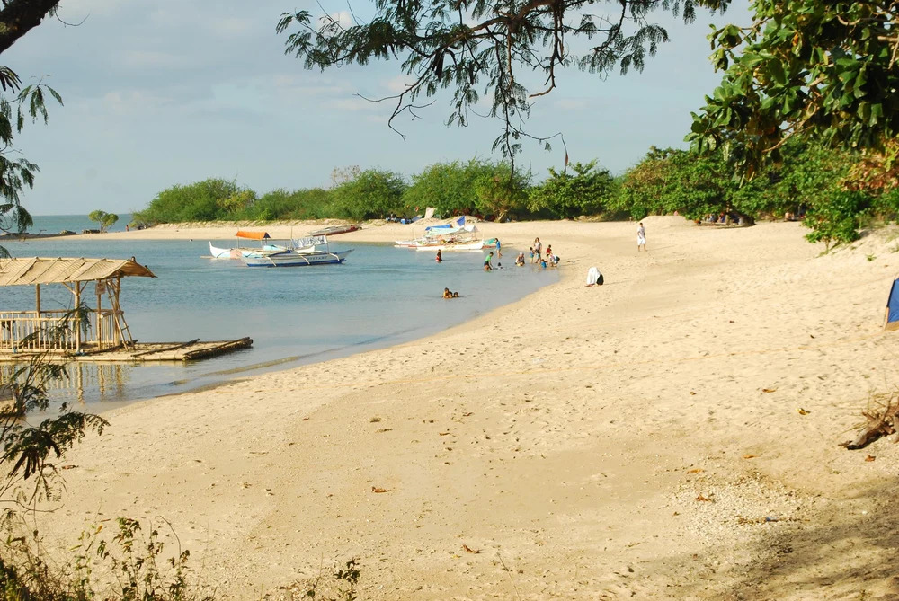
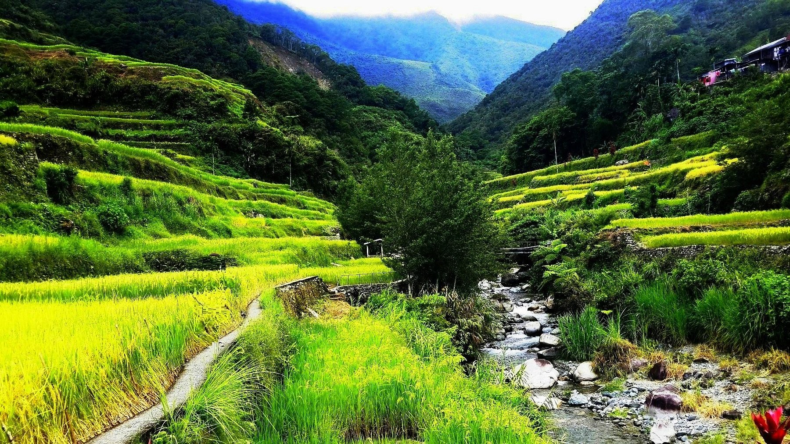
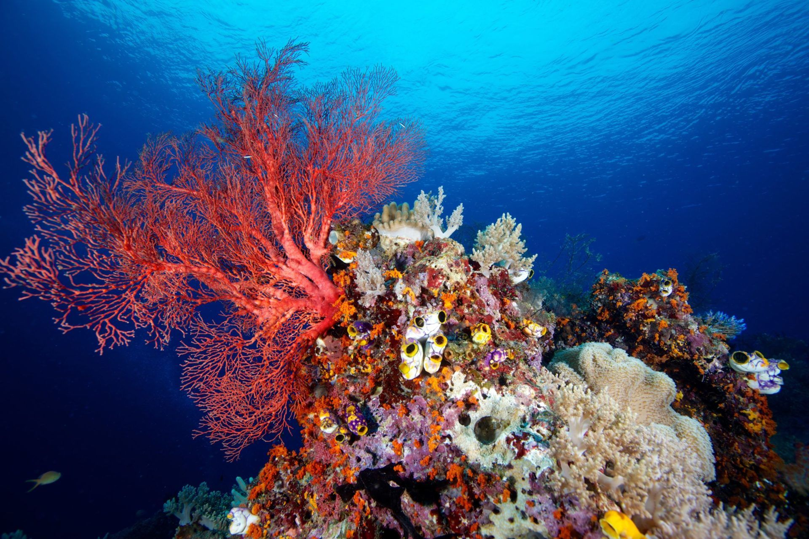

⋆｡ﾟ☁︎✈︎ P H O T O ⋆ G A L L E R Y🌤
The Philippines, an archipelago consisting of more than 7,000 islands and islets, is home to a multitude of marvelous sand beaches, rugged yet breathtaking volcanic mountain views, rich farmlands, and stunning coral reefs. From its colorful public transportation, to its unique cuisine, vibrant festivals that showcase its colorful culture, and friendly locals, there really is no place like the Philippines.
Burot Beach
- Found in Calatagan, Batangas, Burot Beach is one of the many coves that lace the western coast of Punta de Santiago.
- A picturesque beach that features more baige-like than white sand, clear waters, and a tranquil atmosphere. Perfect for relaxation and beach activities.

Hapao Rice Terraces
- Located in the municipality of Hungduan, this is one of the five, as well as the longest, sites in Ifugao included in the UNESCO World Heritage list under cultural landscape category.
- A majestic sight with its cascading layers of rice paddies, nestled amidst the mountains of the Cordillera region in the Philippines.

Mt. Pinatubo
- An active stratovolcano in the Zambales Mountains, located on the tripoint boundary of the Philippine provinces of Zambales, Tarlac, and Pampanga, all in Central Luzon on the northern island of Luzon.
- It is known for its devastating eruption in June 15, 1991, which caused widespread destruction and had significant impacts on the environment and climate.

Apo Reef
- The second largest contiguous coral reef system in the world, right after the Great Barrier Reef of Australia, and the largest in the Philippines.
- Apo Reef, located off the coast of Occidental Mindoro and in the Coral Triangle, consisting of two isolated coral reefs separated by a 30-meter deep channel, is home to clear waters with an astounding biodiversity of marine life.